Week9
Density Estimation
Anomaly detection : Problem Motivation
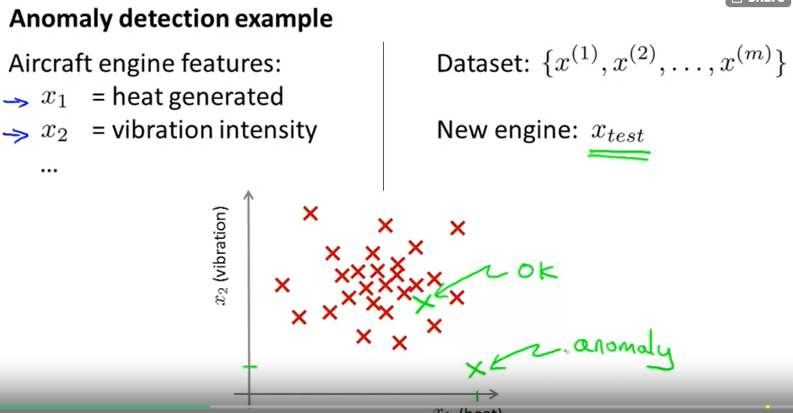
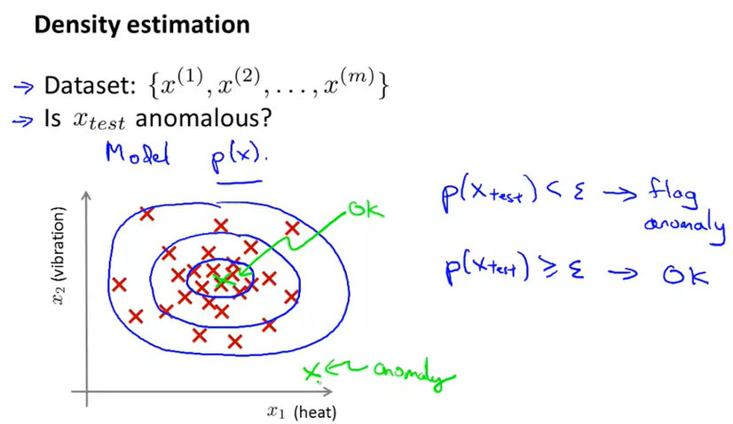
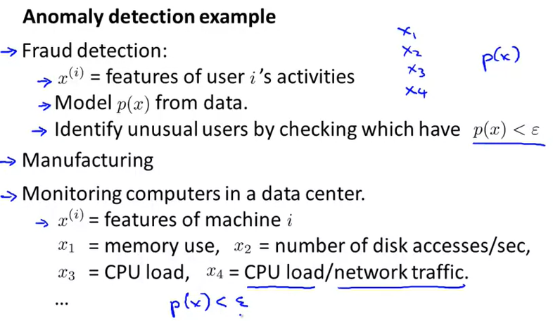
Gaussian Distribution
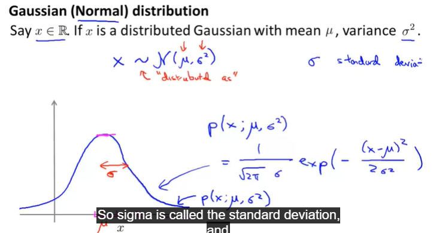
denote a Gaussian distribution, sometimes I'm going to write script N parentheses mu comma sigma script.
So this script N stands for normal since Gaussian and normal they mean the thing are synonyms. And the Gaussian distribution is parametarized by two parameters, by a mean parameter which we denote mu and a variance parameter which we denote via sigma squared.
If we plot the Gaussian distribution or Gaussian probability density. It'll look like the bell shaped curve which you may have seen before. And so this bell shaped curve is paramafied by those two parameters, mu and sequel.
And the location of the center of this bell shaped curve is the mean mu. And the width of this bell shaped curve, roughly that, is this parameter, sigma, is also called one standard deviation, and so this specifies the probability of x taking on different values.
So, x taking on values here in the middle here it's pretty high, since the Gaussian density here is pretty high, whereas x taking on values further, and further away will be diminishing in probability. Finally just for completeness let me write out the formula for the Gaussian distribution.
So the probability of x, and I'll sometimes write this as the p (x) when we write this as P ( x ; mu, sigma squared), and so this denotes that the probability of X is parameterized by the two parameters mu and sigma squared. And the formula for the Gaussian density is this 1/ root 2 pi, sigma e (-(x-mu/g) squared/2 sigma squared. So there's no need to memorize this formula. This is just the formula for the bell-shaped curve over here on the left.
There's no need to memorize it, and if you ever need to use this, you can always look this up.
And so that figure on the left, that is what you get if you take a fixed value of mu and take a fixed value of sigma, and you plot P(x) so this curve here.
This is really p(x) plotted as a function of X for a fixed value of Mu and of sigma squared. And by the way sometimes it's easier to think in terms of sigma squared that's called the variance.
And sometimes is easier to think in terms of sigma. So sigma is called the standard deviation, and so it specifies the width of this Gaussian probability density, where as the square sigma, or sigma squared, is called the variance.
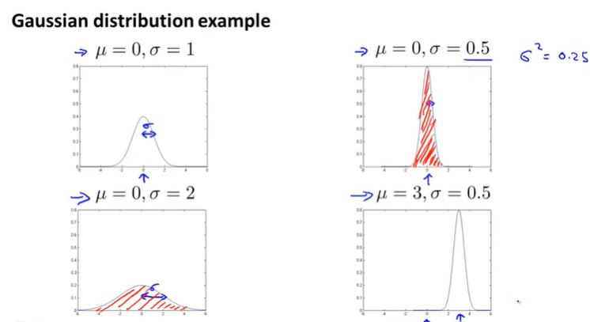
Desnsity Estimation
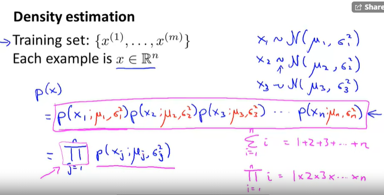
Just as a side comment for those of you that are experts in statistics, it turns out that this equation that I just wrote out actually corresponds to an independence assumption on the values of the features x1 through xn.
But in practice it turns out that the algorithm of this fragment, it works just fine, whether or not these features are anywhere close to independent and even if independence assumption doesn't hold true this algorithm works just fine.
But in case you don't know those terms I just used independence assumptions and so on, don't worry about it. You'll be able to understand it and implement this algorithm just fine and that comment was really meant only for the experts in statistics.
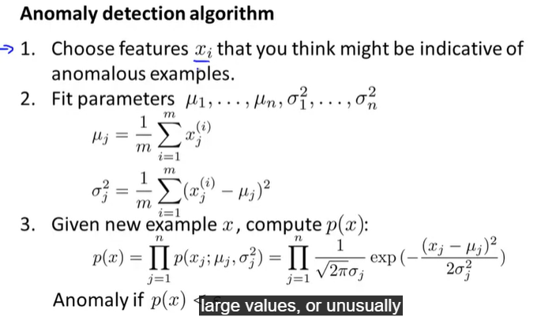
But more generally, just try to choose features that describe general properties of the things that you're collecting data on.
Next, given a training set, of M, unlabled examples,X1 through X M, we then fit the parameters, mu 1 through mu n, and sigma squared 1 through sigma squared n, and so these were the formulas similar to the formulas we have in the previous video, that we're going to use the estimate each of these parameters, and just to give interpretation, mu J, that's my average value of the j feature. Mu j goes in this term p of xj. which is parametrized by mu J and sigma squared J. And so this says for the mu J just take the mean over my training set of the values of the j feature.
And, just to mention, that you do this, you compute these formulas for j equals one through n. So use these formulas to estimate mu 1, to estimate mu 2, and so on up to mu n, and similarly for sigma squared, and it's also possible to come up with vectorized versions of these.
So if you think of mu as a vector, so mu if is a vector there's mu 1, mu 2, down to mu n, then a vectorized version of that set of parameters can be written like so sum from 1 equals one through n xi.
So, this formula that I just wrote out estimates this xi as the feature vectors that estimates mu for all the values of n simultaneously.
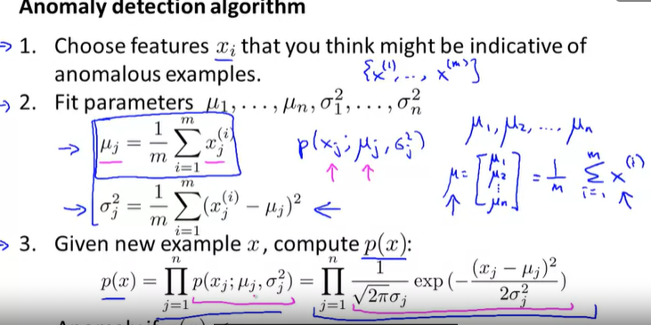
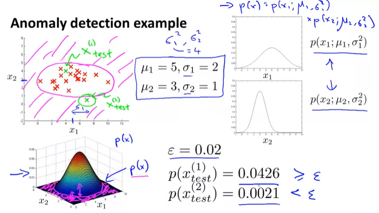
Developing and evaluating an anomaly detection system
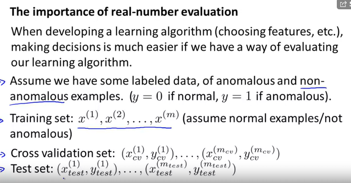
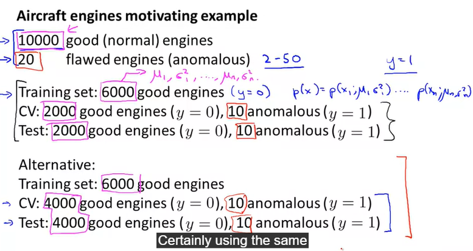
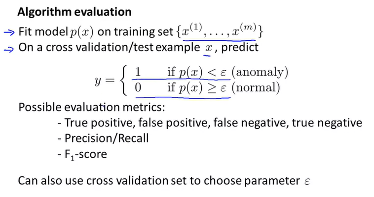
Of course these labels are will be very skewed because y equas zero, that is normal examples, usually be much more common than y equals 1 than anomalous examples.
But, you know, this is much closer to the source of evaluation metrics we can use in supervised learning.So what's a good evaluation metric to use. Well, because the data is very skewed, because y equals 0 is much more common, classification accuracy would not be a good the evaluation metrics. So, we talked about this in the earlier video.
So, if you have a very skewed data set, then predicting y equals 0 all the time, will have very high classification accuracy.
Instead, we should use evaluation metrics, like computing the fraction of true positives, false positives, false negatives, true negatives or compute the position of the v curve of this algorithm or do things like compute the f1 score, right, which is a single real number way of summarizing the position and the recall numbers. And so these would be ways to evaluate an anomaly detection algorithm on your cross validation set or on your test set.
Anomaly Detection vs Supervised Learning
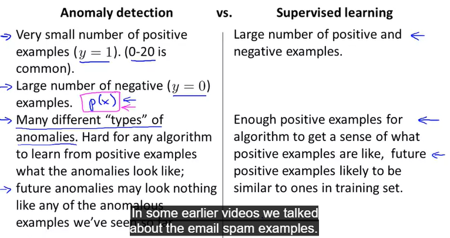
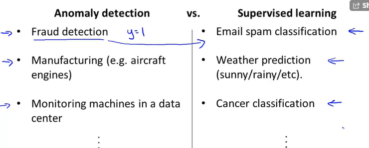
Choosing what features to use
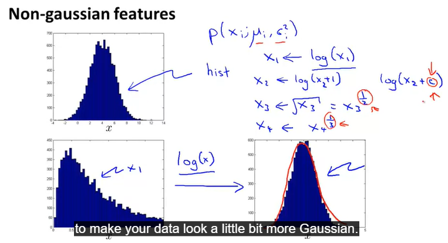
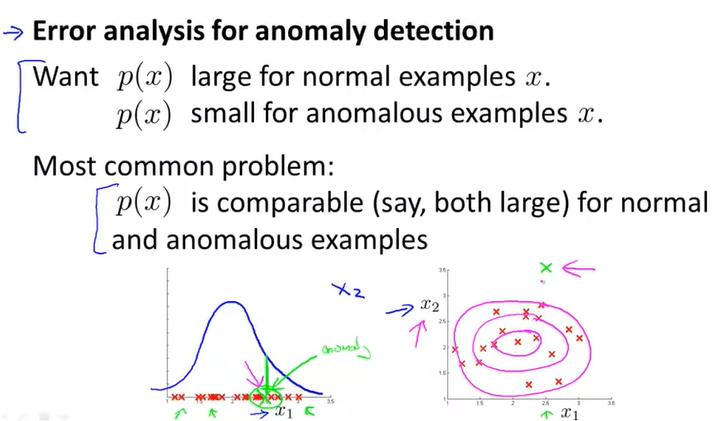
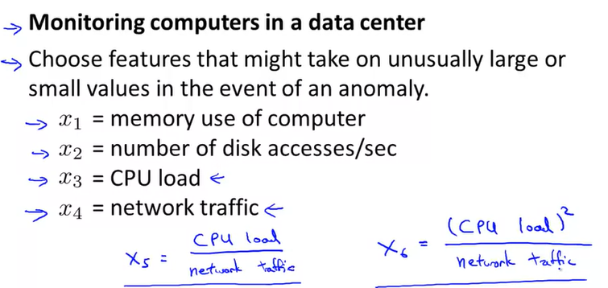
Multivariate Gaussian Distribution
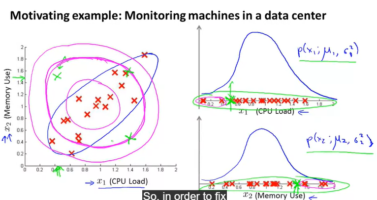
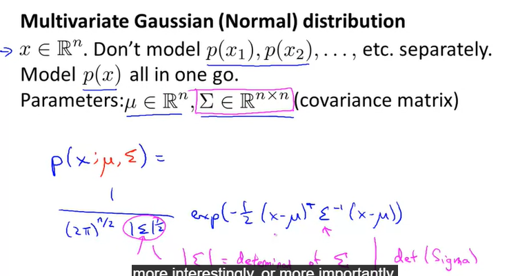
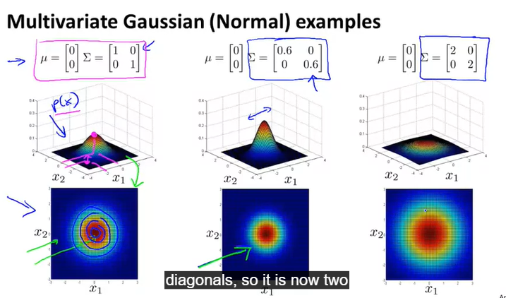
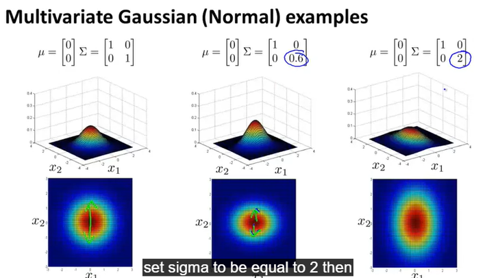
Now, one of the cool things about the multivariate Gaussian distribution is that you can also use it to model correlations between the data.
That is we can use it to model the fact that X1 and X2 tend to be highly correlated with each other for example.
So specifically if you start to change the off diagonal entries of this covariance matrix you can get a different type of Gaussian distribution.
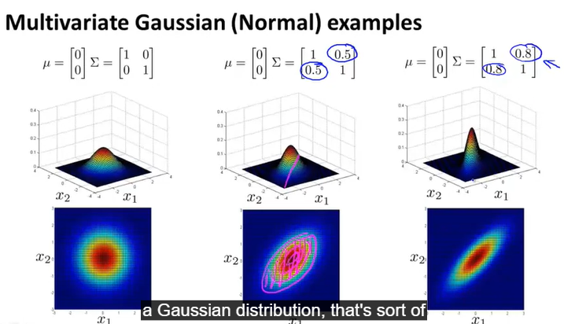
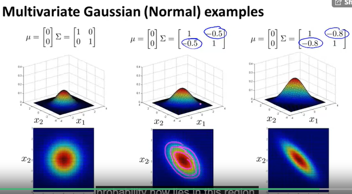
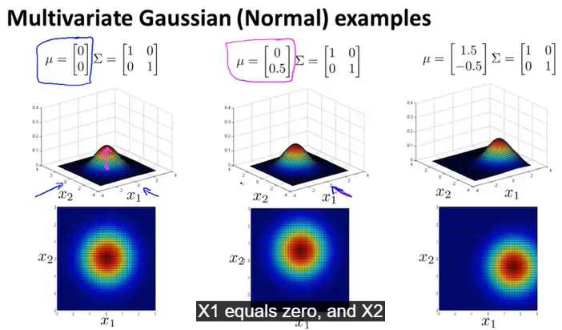
Anomaly detection using Multivariate Gaussian Detection
To recap the multivariate Gaussian distribution and the multivariate normal distribution has two parameters, mu and sigma.
Where mu this an n dimensional vector and sigma,the covariance matrix, is an
n by n matrix.And here's the formula for the probability of X, as parametereized by mu and sigma, and as you vary mu and sigma, you can get a range of different distributions
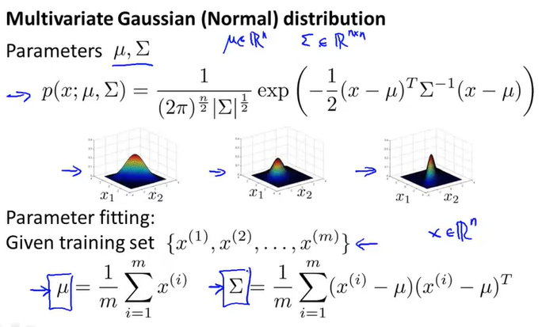
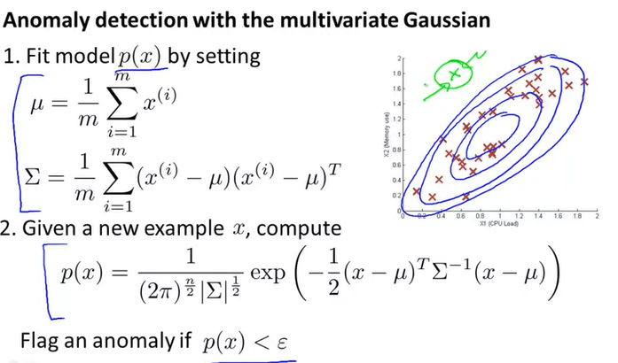
what we do not have, is a set of contours that are at an angle, right?
And this corresponded to examples where sigma is equal to 1 1, 0.8, 0.8. Let's say, with non-0 elements on the off diagonals. So, it turns out that it's possible to show mathematically that this model actually is the same as a multivariate Gaussian distribution but with a constraint.
And the constraint is that the covariance matrix sigma must have 0's on the off diagonal elements. In particular, the covariance matrix sigma, this thing here, it would be sigma squared 1, sigma squared 2, down to sigma squared n, and then everything on the off diagonal entries, all of these elements above and below the diagonal of the matrix, all of those are going to be zero.And in fact if you take these values of sigma, sigma squared 1, sigma squared 2, down to sigma squared n, and plug them into here, and you know, plug them into this covariance matrix, then the two models are actually identical.
That is, this new model,using a multivariate Gaussian distribution,corresponds exactly to the old model, if the covariance matrix sigma, has only 0 elements off the diagonals, and in pictures that corresponds to having Gaussian distributions, and follow transcript6:20where the contours of this distribution function are axis aligned.
So you aren't allowed to model the correlations between the diffrent features.
So in that sense the original model is actually a special case of this multivariate Gaussian model.
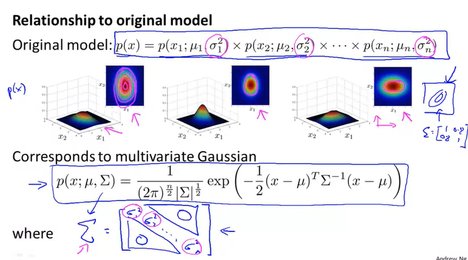
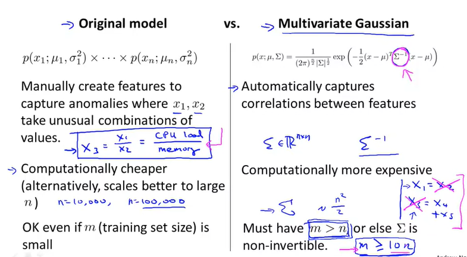
Recommender Systems
Predicting Movie ratings
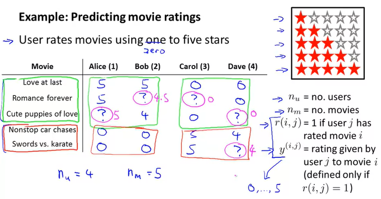
Content based recommendations
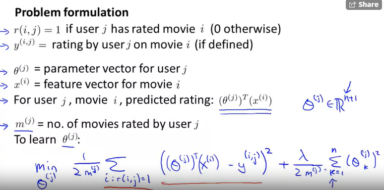
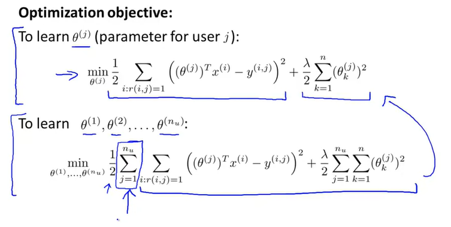

using these formulas for the derivative if you want, you can also plug them into a more advanced optimization algorithm, like conjugate gradient or LBFGS or what have you. and use that to try to minimize the cost function j as well.
So hopefully you now know how you can apply essentially a deviation on linear regression in order to predict different movie ratings by different users.
This particular algorithm is called a content based recommendations, or a content based approach, because we assume that we have available to us features for the different movies.
And so where features that capture what is the content of these movies, of how romantic is this movie, how much action is in this movie. And we're really using features of a content of the movies to make our prediction
Collaborative filtering
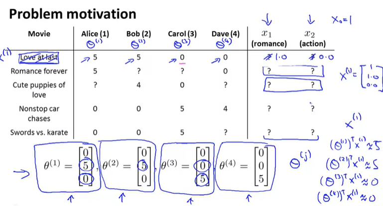
So to summarize, in this video we've seen an initial collaborative filtering algorithm.
The term collaborative filtering refers to the observation that when you run this algorithm with a large set of users, what all of these users are effectively doing are sort of collaboratively--or collaborating to get better movie ratings for everyone because with every user rating some subset with the movies, every user is helping the algorithm a little bit to learn better features,and then by helping-- by rating a few movies myself, I will be helpingthe system learn better features and then these features can be used by the system to make better movie predictions for everyone else.
And so there is a sense of collaboration where every user is helping the system learn better features for the common good. This is this collaborative filtering.
Algorithms
So one of the things we worked out earlier is that if you have features for the movies then you can solve this minimization problem to find the parameters theta for your users.
And then we also worked that out, if you are given the parameters theta, you can also use that to estimate the features x, and you can do that by solving this minimization problem.
So one thing you could do is actually go back and forth.
Maybe randomly initialize the parameters and then solve for theta, solve for x, solve for theta, solve for x. But, it turns out that there is a more efficient algorithm that doesn't need to go back and forth between the x's and the thetas, but that can solve for theta and x simultaneously. And here it is. What we are going to do, is basically take both of these optimization objectives, and put them into the same objective.
So I'm going to define the new optimization objective j, which is a cost function, that is a function of my features x and a function of my parameters theta.
And, it's basically the two optimization objectives I had on top, but I put together.
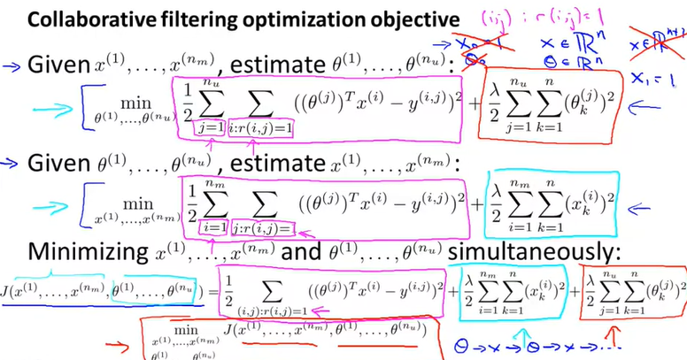
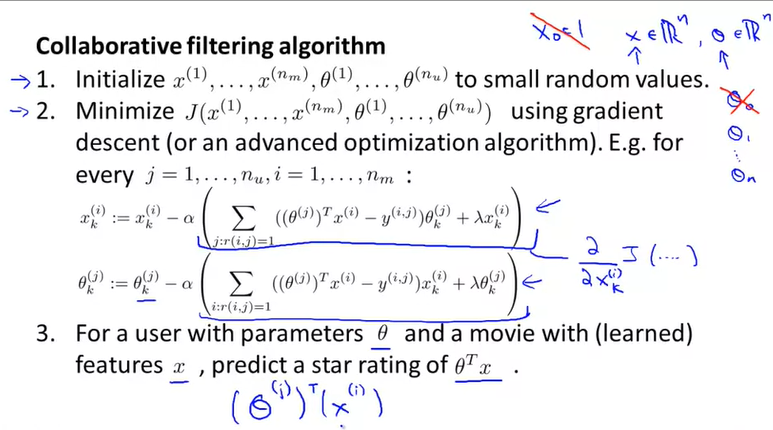
Low Rank Matrix Factorization
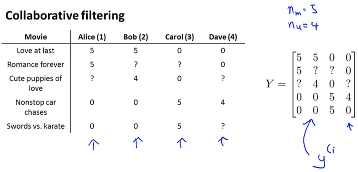
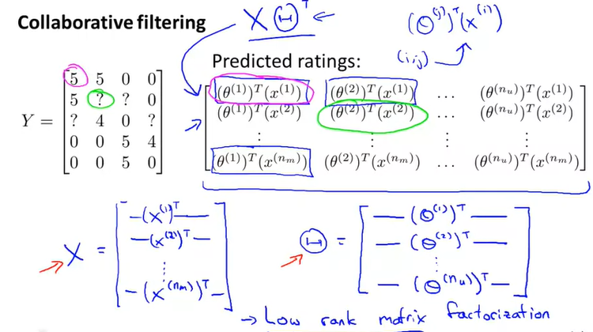
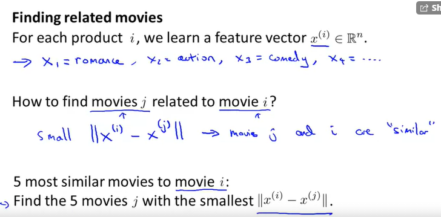
Implementation detail: Mean Normalization
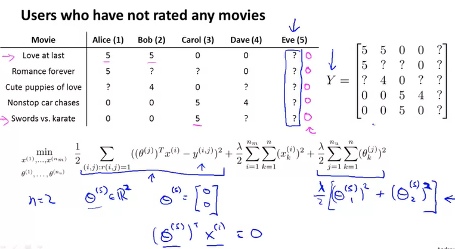
Here, the idea is to improve the recommendations for Eve(5) whos score of recommendation is calculated as 0 as complete filled with ‘?’
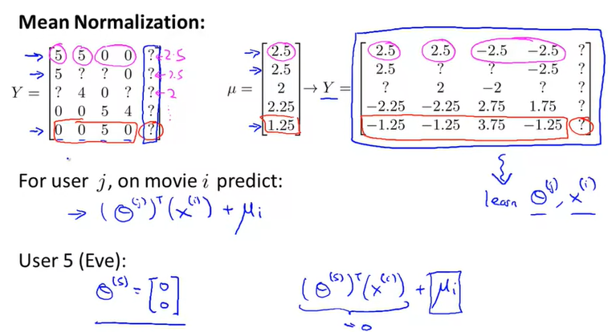